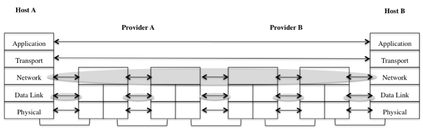
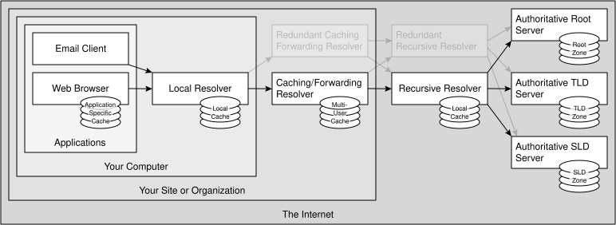
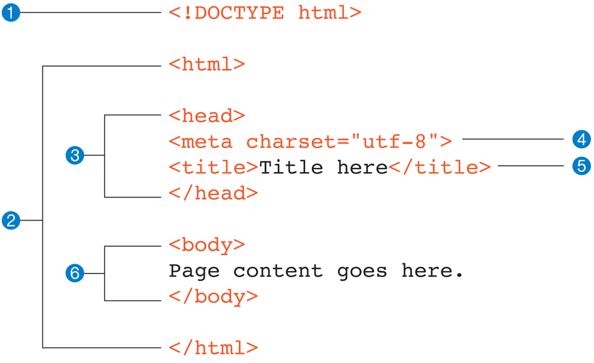
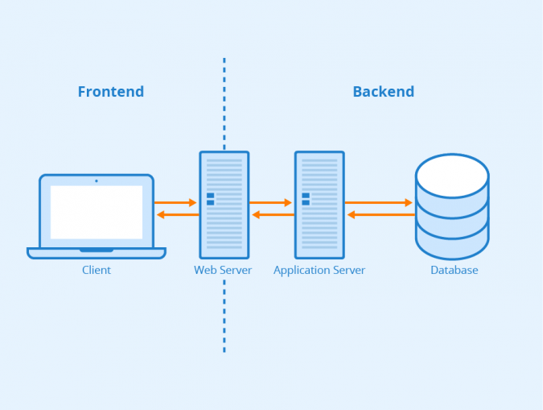
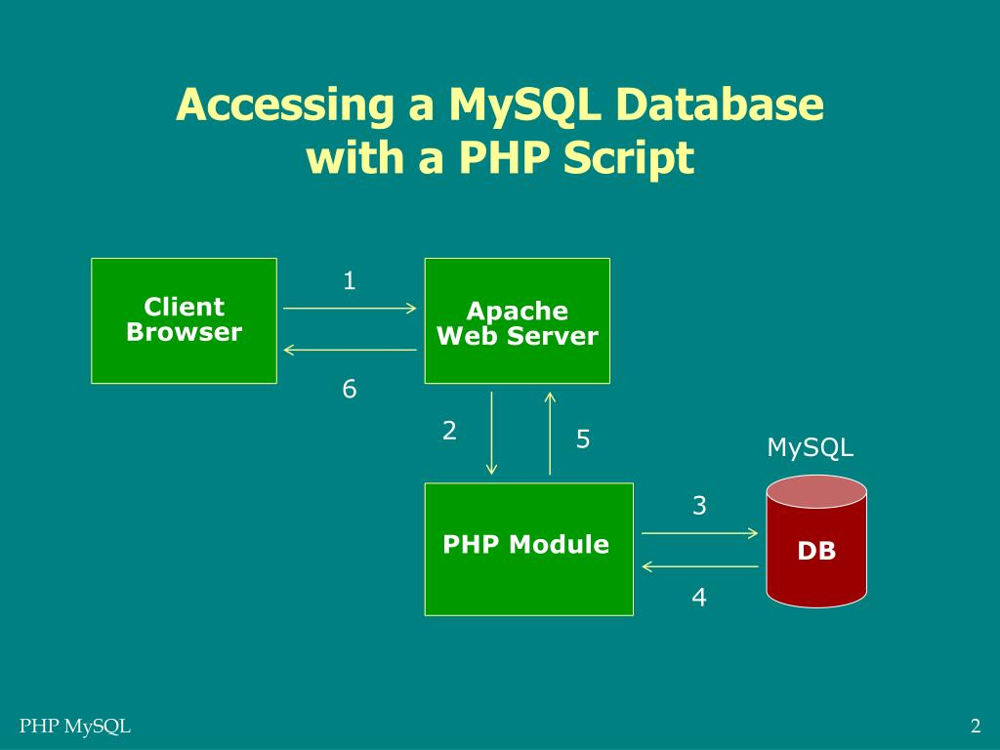

A protocol is a set of rules that devices follow to communicate.
| Protocol | Purpose |
|---|---|
| TCP/IP | The core protocol suite used to move data between devices across networks. TCP provides reliable, ordered delivery; IP addresses and routes packets. |
| HTTP | Transfers web requests and responses between browsers and web servers. |
| HTTPS | HTTP protected using TLS encryption and authentication. |
| DNS | Translates domain names, such as example.com, into IP addresses. |
| SMTP | Sends and relays email between mail systems. Email retrieval commonly uses other protocols, such as IMAP or POP3. |
TCP/IP layers (simplified): Application → Transport → Internet → Network Access.

An IP address identifies a network interface so data can be directed to the correct destination.
192.168.1.10.2001:db8::1./24.DNS is the Internet's naming system. It helps a browser find the IP address associated with a domain name.
Basic flow: Browser → DNS resolver → DNS servers as needed → IP address returned → browser connects to the website. Results may be cached to speed up later lookups.

Common status codes: 200 OK, 404 Not Found, 500 Internal Server Error.
HTML defines the structure and meaning of web-page content. Tags describe headings, paragraphs, links, images, forms, and other elements.
<!DOCTYPE html>
<html lang="en">
<head>
<meta charset="UTF-8">
<title>My Page</title>
</head>
<body>
<h1>Welcome</h1>
<p>This is a web page.</p>
<a href="https://example.com">Visit a website</a>
</body>
</html><head> contains page metadata and resource references.<body> contains the page content shown in the browser.
HTML document structure and hierarchy
JavaScript is commonly used in the browser to respond to events, check form input, and update page content.
const name = "Sam";
let marks = 75;
if (marks >= 40) {
console.log(`${name} passed`);
} else {
console.log(`${name} failed`);
}
function add(a, b) {
return a + b;
}Key fundamentals: variables (let, const), data types, operators, conditions, loops, functions, events, and DOM manipulation.
| Front-end scripting | Server-side scripting |
|---|---|
| Runs in the user's browser. | Runs on the web server. |
| Commonly uses JavaScript. | Commonly uses PHP in this syllabus. |
| Handles interface behaviour and immediate interactions. | Handles validation, authentication, business logic, and database operations. |
| Cannot safely protect secrets or replace server validation. | Can access protected server resources and databases. |

PHP is a server-side scripting language that can generate dynamic HTML. PHP code is commonly saved in a .php file and processed by a PHP-enabled server.
<?php
$name = "Sam";
echo "Hello, " . $name;
?><?php.;.// and /* ... */ are comment styles.echo outputs content.$name = "Riya"; // string
$age = 20; // integer
$percentage = 82.5; // float
$isStudent = true; // boolean
$subjects = ["PHP", "HTML"]; // array
const COLLEGE = "ABC College";
// Alternatively: define("SITE_NAME", "My Site");PHP variables begin with $. Variable names are case-sensitive. Common types include string, integer, float, boolean, array, object, and null. A constant's value cannot be reassigned after definition.
+, -, *, /, %, **=, +=, -= and .= (string concatenation assignment).==, ===, !=, !==, <, >&&, ||, !.Prefer === when both value and type should match.
if ($age >= 18) {
echo "Adult";
} elseif ($age >= 13) {
echo "Teenager";
} else {
echo "Child";
}
for ($i = 1; $i <= 3; $i++) {
echo $i;
}
$subjects = ["PHP", "HTML"];
foreach ($subjects as $subject) {
echo $subject;
}PHP also supports switch, while, and do ... while. PHP can be mixed with HTML to display dynamic content:
<ul>
<?php foreach ($subjects as $subject): ?>
<li><?= htmlspecialchars($subject) ?></li>
<?php endforeach; ?>
</ul>Strings can use single or double quotes. Double-quoted strings can interpolate variables.
$name = "Riya";
$message = "Hello, $name";
$text = " Learn PHP ";
echo strlen($text); // string length in bytes
echo trim($text); // remove surrounding whitespace
echo strtoupper($text); // uppercase
echo substr($text, 0, 5); // part of a string
echo str_replace("PHP", "HTML", $text); // replace text
echo strpos($text, "PHP"); // position, or false if not found
echo sprintf("Score: %d%%", 90); // formatted stringUseful functions: strlen(), trim(), strtolower(), strtoupper(), substr(), strpos(), str_replace(), explode(), implode(), sprintf(), and htmlspecialchars().
Gotcha: strpos() can return 0 when a match is at the start. Check it with !== false, not just if (strpos(...)).
Output safety: When displaying user-supplied text inside HTML, use htmlspecialchars() to prevent HTML injection.
The action attribute specifies the receiving script. The method attribute specifies how data is sent. Each input needs a name so PHP can access its submitted value.
<form action="process.php" method="post">
<label>Name: <input type="text" name="name" required></label>
<label>Email: <input type="email" name="email" required></label>
<button type="submit">Register</button>
</form>| GET | POST |
|---|---|
| Data is included in the URL query string. | Data is sent in the request body. |
| Useful for searches and shareable/filterable URLs. | Commonly used when submitting forms or changing server data. |
| Data may appear in browser history and logs. | Values are not normally shown in the URL, but POST alone does not encrypt them. |
Access values with $_GET. |
Access values with $_POST. |
Use HTTPS to protect data in transit. Never send passwords using GET.
Browser validation such as required improves usability, but users can bypass it. Always validate submitted data again on the server.
register.php):<?php
$errors = [];
$name = $email = "";
if ($_SERVER["REQUEST_METHOD"] === "POST") {
$name = trim($_POST["name"] ?? "");
$email = trim($_POST["email"] ?? "");
$age = filter_var($_POST["age"] ?? "", FILTER_VALIDATE_INT);
if ($name === "") $errors[] = "Name is required.";
if (!filter_var($email, FILTER_VALIDATE_EMAIL)) {
$errors[] = "Enter a valid email.";
}
if ($age === false || $age === null || $age < 16) {
$errors[] = "Enter a valid age (16 or above).";
}
}
?>
<form method="post" action="register.php">
<label>Name: <input name="name" required></label>
<label>Email: <input type="email" name="email" required></label>
<label>Age: <input type="number" name="age" min="16" required></label>
<button type="submit">Register</button>
</form>
<?php foreach ($errors as $error): ?>
<p><?= htmlspecialchars($error) ?></p>
<?php endforeach; ?>This example validates input. A complete registration system should also store valid records in a database and handle duplicate email addresses.
A login form usually asks for an email/username and password. Validate that fields are present on the server, retrieve the account safely from the database, and verify a stored password hash.
<form action="login.php" method="post">
<label>Email: <input type="email" name="email" required></label>
<label>Password: <input type="password" name="password" required></label>
<button type="submit">Log in</button>
</form>After creating a PDO connection ($pdo, shown in Unit IV), the essential server-side check is:
$email = trim($_POST["email"] ?? "");
$password = $_POST["password"] ?? "";
$stmt = $pdo->prepare(
"SELECT id, password_hash FROM users WHERE email = ?"
);
$stmt->execute([$email]);
$user = $stmt->fetch(PDO::FETCH_ASSOC);
if ($user && password_verify($password, $user["password_hash"])) {
// Login is valid: start the application's authenticated session.
} else {
$error = "Invalid email or password.";
}When creating accounts, store passwords using password_hash($password, PASSWORD_DEFAULT). Never store plain-text passwords or place user input directly into an SQL query.
A database holds related data. A table stores records in rows and fields in columns.
CREATE DATABASE college;
USE college;
CREATE TABLE students (
id INT AUTO_INCREMENT PRIMARY KEY,
name VARCHAR(100) NOT NULL,
email VARCHAR(150) NOT NULL UNIQUE,
age INT NOT NULL
);PDO provides a consistent interface for database access. Replace the sample username and password with an account configured for your environment.
<?php
$pdo = new PDO(
"mysql:host=localhost;dbname=college;charset=utf8mb4",
"app_user",
"your_password",
[PDO::ATTR_ERRMODE => PDO::ERRMODE_EXCEPTION]
);
?>Keep database credentials out of public source code in real deployments, and give the application account only the permissions it needs.
Use prepared statements for queries that include user input.
// INSERT
$stmt = $pdo->prepare(
"INSERT INTO students (name, email, age) VALUES (?, ?, ?)"
);
$stmt->execute(["Riya", "riya@example.com", 20]);
// SELECT
$stmt = $pdo->query("SELECT id, name, email, age FROM students");
$students = $stmt->fetchAll(PDO::FETCH_ASSOC);
foreach ($students as $student) {
echo htmlspecialchars($student["name"]);
}
// UPDATE
$stmt = $pdo->prepare("UPDATE students SET age = ? WHERE id = ?");
$stmt->execute([21, 1]);
// DELETE
$stmt = $pdo->prepare("DELETE FROM students WHERE id = ?");
$stmt->execute([1]);INSERT adds a record.SELECT retrieves records.UPDATE changes existing records.DELETE removes records.
password_verify().